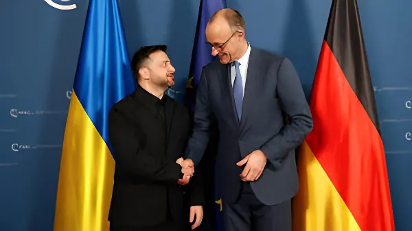

Le 21 mai 2026, une lettre confidentielle du chancelier Friedrich Merz adressée aux dirigeants européens a été révélée par l'AFP. Elle propose d'accorder à l'Ukraine un statut inédit de « membre associé » de l'Union européenne, conçu comme une étape transitoire vers l'adhésion pleine et entière. La proposition bouscule le cadre classique de l'élargissement et suscite à la fois des espoirs et des résistances, y compris à Kyiv.
L'Ukraine a obtenu le statut de candidat officiel à l'adhésion à l'UE en décembre 2022, dans le sillage de l'invasion russe à grande échelle. Si l'ouverture formelle des négociations a été actée en juin 2024, le processus a rapidement piétiné. La raison principale : le veto systématique de la Hongrie de Viktor Orbán, qui a bloqué l'avancée des chapitres de négociation pendant plus de deux ans.
La situation s'est cependant modifiée au printemps 2026 avec la victoire de Péter Magyar aux élections hongroises du 12 avril 2026, ouvrant la perspective d'une levée du blocage de Budapest. C'est dans ce contexte renouvelé que le chancelier allemand Friedrich Merz a jugé le moment opportun pour formuler une proposition ambitieuse visant à sortir le processus de son enlisement.
Le cœur de la lettre de Merz repose sur la création d'un statut de « membre associé » sans précédent dans le droit de l'UE, conçu comme une étape préliminaire et transitoire vers l'adhésion complète. Ce statut n'existe pas dans les traités actuels et nécessiterait lui-même l'unanimité des Vingt-Sept pour être créé.
Concrètement, Merz propose que des représentants ukrainiens participent aux réunions du Conseil européen et du Conseil de l'UE, sans droit de vote. Il envisage également la nomination d'un commissaire européen « associé » ukrainien, sans portefeuille, ainsi que l'envoi d'observateurs ukrainiens au Parlement européen et à la Cour de justice de l'UE. En parallèle, Merz réclame d'ouvrir « immédiatement et sans délai » les chapitres de négociation restants avec Kyiv.
Invasion russe à grande échelle de l'Ukraine. Volodymyr Zelensky dépose la demande d'adhésion de l'Ukraine à l'UE dans les jours qui suivent.
Le Conseil européen accorde à l'Ukraine le statut de pays candidat à l'adhésion, une décision historique prise en un temps record.
Ouverture formelle des négociations d'adhésion UE-Ukraine. Les progrès restent limités en raison du veto de la Hongrie d'Orbán sur les chapitres de négociation.
Péter Magyar et son parti remportent les élections hongroises, défaisant Viktor Orbán. Le principal verrou structurel sur l'adhésion ukrainienne à l'UE est potentiellement levé.
Rencontre Merz–Zelensky à la chancellerie de Berlin. Les deux dirigeants évoquent l'accélération du rapprochement UE-Ukraine.
Merz adresse une lettre confidentielle aux dirigeants de l'UE, proposant le statut de « membre associé » pour l'Ukraine.
La lettre est révélée par l'AFP. Elle suscite immédiatement des réactions à Bruxelles, Kyiv et dans les capitales européennes.
L'un des aspects les plus novateurs de la proposition de Merz concerne la dimension sécuritaire. Le chancelier suggère que le statut de membre associé s'accompagne d'un mécanisme d'assistance mutuelle : en cas d'attaque russe contre l'Ukraine pendant la période transitoire, les États membres de l'UE s'engageraient à apporter leur aide, sur le modèle de l'article 42.7 du Traité sur l'Union européenne.
Merz qualifie lui-même ce mécanisme de « garantie de sécurité substantielle ». Il y voit aussi un levier diplomatique dans les négociations de paix avec Moscou : une Ukraine formellement ancrée dans les institutions européennes — même sans plein droit de vote — enverrait un signal fort à la Russie quant à l'irréversibilité du choix européen de Kyiv.
| Élément du statut proposé | Contenu |
|---|---|
| Conseil européen | Participation aux sommets, sans droit de vote |
| Conseil de l'UE | Présence aux réunions ministérielles, sans vote |
| Commission européenne | Commissaire associé ukrainien, sans portefeuille |
| Parlement européen | Observateurs ukrainiens (sans vote) |
| Cour de justice UE | Observateurs ukrainiens |
| Sécurité | Mécanisme d'assistance mutuelle en cas d'attaque |
La proposition de Merz se heurte à plusieurs obstacles de taille. Sur le plan juridique d'abord : le statut de « membre associé » n'existe pas dans les traités de l'UE. Sa création nécessiterait soit une révision des traités — un processus extrêmement long et incertain —, soit un accord politique sui generis requérant l'unanimité des Vingt-Sept, un seuil considérable à atteindre.
Sur le plan politique ensuite : si la Hongrie de Magyar est susceptible de lever son veto sur les chapitres de négociation classiques, rien ne garantit qu'elle adhérerait à la création d'un nouveau statut institutionnel. Par ailleurs, plusieurs États membres — dont la France — ont exprimé des réserves sur la vitesse du processus d'élargissement. L'Allemagne elle-même reconnaît, par la voix de Merz, qu'une adhésion formelle dans « un avenir proche » reste hors de portée.
« Il est évident que nous ne serons pas en mesure de mener à bien le processus d'adhésion dans un avenir proche, compte tenu des innombrables obstacles ainsi que des complexités politiques des procédures de ratification. »
— Friedrich Merz, lettre aux dirigeants de l'UE, 18 mai 2026La proposition de Merz dépasse la seule question ukrainienne. Elle révèle l'ambition de l'Allemagne de reprendre le rôle de moteur de la construction européenne, dans un contexte où l'UE doit simultanément gérer une guerre à ses portes, un élargissement historiquement complexe et une refonte de son architecture sécuritaire. En inventant un statut intermédiaire, Berlin tente de réconcilier l'urgence géopolitique et les contraintes institutionnelles. Le différend avec Kyiv n'est pas un désaccord de fond — les deux capitales veulent l'adhésion — mais un conflit sur le rythme et sur celui qui en définit les conditions. L'enjeu réel est de savoir si ce statut sera un tremplin ou, comme le craint Zelensky, un plafond de verre qui s'installerait durablement.
Am 21. Mai 2026 wurde ein vertraulicher Brief von Bundeskanzler Friedrich Merz an die europäischen Staats- und Regierungschefs durch die AFP veröffentlicht. Darin schlägt er vor, der Ukraine einen neuartigen Status als „assoziiertes Mitglied" der Europäischen Union zu gewähren — als Übergangsstufe auf dem Weg zur Vollmitgliedschaft. Der Vorschlag stellt den klassischen Erweiterungsrahmen in Frage und löst sowohl Hoffnungen als auch Widerstände aus, auch in Kyiv.
Die Ukraine erhielt im Dezember 2022, nach der russischen Großinvasion, den offiziellen Kandidatenstatus für den EU-Beitritt. Obwohl die förmlichen Beitrittsverhandlungen im Juni 2024 eröffnet wurden, verliefen sie rasch im Sand. Hauptgrund: das systematische Veto des ungarischen Ministerpräsidenten Viktor Orbán, der die Verhandlungskapitel über zwei Jahre lang blockierte.
Die Lage änderte sich jedoch im Frühjahr 2026, als Péter Magyar die ungarischen Wahlen am 12. April 2026 gewann und damit die Aussicht auf ein Ende der Blockade in Budapest eröffnete. In diesem erneuerten Kontext sah Bundeskanzler Friedrich Merz den richtigen Moment für einen ambitionierten Vorschlag gekommen, der den festgefahrenen Prozess wieder in Gang bringen soll.
Der Kern des Merz-Briefes liegt in der Schaffung eines „assoziierten Mitgliedsstatus", der im EU-Recht bislang nicht existiert und als vorläufige Zwischenstufe auf dem Weg zur Vollmitgliedschaft gedacht ist. Dieser Status ist in den bestehenden Verträgen nicht vorgesehen und würde selbst die Einstimmigkeit aller Siebenundzwanzig erfordern.
Konkret sieht Merz vor, dass ukrainische Vertreter an den Sitzungen des Europäischen Rates und des Rates der EU teilnehmen, jedoch ohne Stimmrecht. Er schlägt außerdem die Ernennung eines ukrainischen „assoziierten" Kommissars ohne Ressort sowie die Entsendung ukrainischer Beobachter ins Europäische Parlament und den Gerichtshof der EU vor. Gleichzeitig fordert er, die verbleibenden Verhandlungskapitel mit Kyiv „sofort und ohne Verzögerung" zu öffnen.
Russische Großinvasion der Ukraine. Präsident Selenskyj stellt unmittelbar danach den Antrag auf EU-Mitgliedschaft.
Der Europäische Rat verleiht der Ukraine in Rekordzeit den offiziellen Kandidatenstatus — eine historische Entscheidung.
Formelle Eröffnung der EU-Beitrittsverhandlungen mit der Ukraine. Die Fortschritte bleiben begrenzt, da Ungarn unter Orbán die Verhandlungskapitel blockiert.
Péter Magyar gewinnt die ungarischen Parlamentswahlen und verdrängt Viktor Orbán. Das wichtigste strukturelle Hindernis für den ukrainischen EU-Beitritt ist potenziell beseitigt.
Treffen von Merz und Selenskyj im Bundeskanzleramt in Berlin. Beide Staats- und Regierungschefs erörtern die Beschleunigung der EU-Annäherung der Ukraine.
Merz sendet einen vertraulichen Brief an die EU-Staats- und Regierungschefs und schlägt den Status „assoziiertes Mitglied" für die Ukraine vor.
Der Brief wird durch die AFP veröffentlicht und löst sofortige Reaktionen in Brüssel, Kyiv und den europäischen Hauptstädten aus.
Einer der innovativsten Aspekte des Merz-Vorschlags betrifft die Sicherheitsdimension. Der Kanzler schlägt vor, dass der assoziierte Mitgliedsstatus von einem Beistandsmechanismus begleitet wird: Bei einem russischen Angriff auf die Ukraine während der Übergangsphase würden sich die EU-Mitgliedstaaten zur Unterstützung verpflichten — in Anlehnung an Artikel 42.7 des Vertrags über die Europäische Union.
Merz bezeichnet diesen Mechanismus selbst als eine « substanzielle Sicherheitsgarantie ». Er sieht darin auch einen diplomatischen Hebel in den Friedensverhandlungen mit Moskau: Eine Ukraine, die institutionell fest in Europa verankert ist — auch ohne volles Stimmrecht —, würde Russland ein starkes Signal über die Unumkehrbarkeit der europäischen Ausrichtung Kyivs senden.
| Element des vorgeschlagenen Status | Inhalt |
|---|---|
| Europäischer Rat | Teilnahme an Gipfeln, ohne Stimmrecht |
| Rat der EU | Präsenz bei Ministertagungen, ohne Stimmrecht |
| Europäische Kommission | Ukrainischer assoziierter Kommissar, ohne Ressort |
| Europäisches Parlament | Ukrainische Beobachter (ohne Stimmrecht) |
| EuGH | Ukrainische Beobachter |
| Sicherheit | Beistandsmechanismus im Angriffsfall |
Der Vorschlag von Merz stößt auf erhebliche Hindernisse. Rechtlich gesehen existiert der Status „assoziiertes Mitglied" in den EU-Verträgen nicht. Seine Schaffung würde entweder eine Vertragsänderung erfordern — ein extrem langwieriger und unsicherer Prozess — oder ein politisches Sonderabkommen, das die Einstimmigkeit aller Siebenundzwanzig voraussetzt.
Politisch ist ebenfalls Vorsicht geboten: Selbst wenn das neue Ungarn unter Magyar sein Veto auf die klassischen Verhandlungskapitel aufhebt, ist keineswegs garantiert, dass es der Schaffung eines neuen institutionellen Status zustimmen würde. Zudem haben mehrere Mitgliedstaaten — darunter Frankreich — Vorbehalte gegenüber dem Tempo des Erweiterungsprozesses geäußert. Deutschland selbst räumt durch Merz ein, dass ein formeller Beitritt „in naher Zukunft" außer Reichweite bleibt.
„Es ist offensichtlich, dass wir den Beitrittsprozess in absehbarer Zeit nicht abschließen können, angesichts der zahlreichen Hindernisse sowie der politischen Komplexität der Ratifizierungsverfahren."
— Friedrich Merz, Brief an die EU-Staats- und Regierungschefs, 18. Mai 2026Der Vorschlag von Merz geht über die reine Ukraine-Frage hinaus. Er zeigt Deutschlands Ambitionen, seine Rolle als Motor der europäischen Integration wiederzubeleben — in einer Zeit, in der die EU gleichzeitig einen Krieg an ihren Grenzen, eine historisch komplexe Erweiterung und eine Neugestaltung ihrer Sicherheitsarchitektur bewältigen muss. Indem Berlin einen Zwischenstatus erfindet, versucht es, geopolitische Dringlichkeit und institutionelle Sachzwänge miteinander zu versöhnen. Der Dissens mit Kyiv ist kein grundsätzlicher: Beide Hauptstädte wollen den Beitritt — sie streiten über das Tempo und darüber, wer die Zwischenbedingungen festlegt. Die eigentliche Frage lautet, ob dieser Status ein Sprungbrett oder, wie Selenskyj befürchtet, eine gläserne Decke werden würde, die sich dauerhaft festigt.